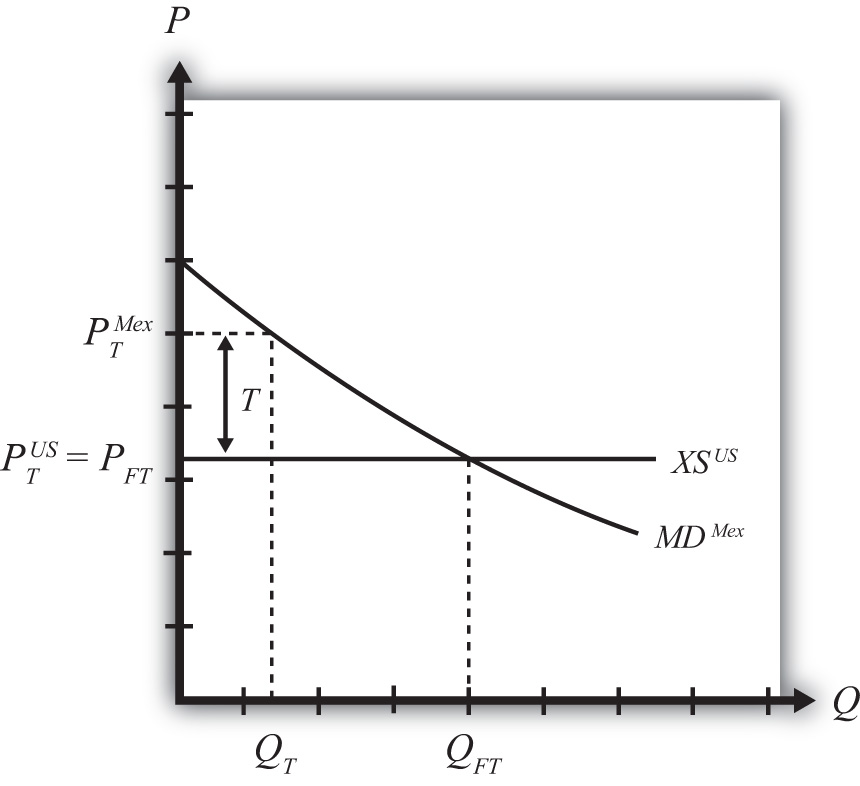

The small country assumption means that the country’s imports are a very small share of the world market—so small that even a complete elimination of imports would have an imperceptible effect on world demand for the product and thus would not affect the world price. Thus when a tariff is implemented by a small country, there is no effect on the world price.
The small country assumption implies that the export supply curve is horizontal at the level of the world price. The small importing country takes the world price as exogenous since it can have no effect on it. The exporter is willing to supply as much of the product as the importer wants at the given world price.
When the tariff is placed on imports, two conditions must hold in the final equilibrium—the same two conditions as in the case of a large country—namely,
and
However, now PTUS remains at the free trade price. This implies that, in the case of a small country, the price of the import good in the importing country will rise by the amount of the tariff, or in other words . As seen in Figure 7.17 "Depicting a Tariff Equilibrium: Small Country Case", the higher domestic price reduces import demand and export supply to QT.
Figure 7.17 Depicting a Tariff Equilibrium: Small Country Case
Jeopardy Questions. As in the popular television game show, you are given an answer to a question and you must respond with the question. For example, if the answer is “a tax on imports,” then the correct question is “What is a tariff?”